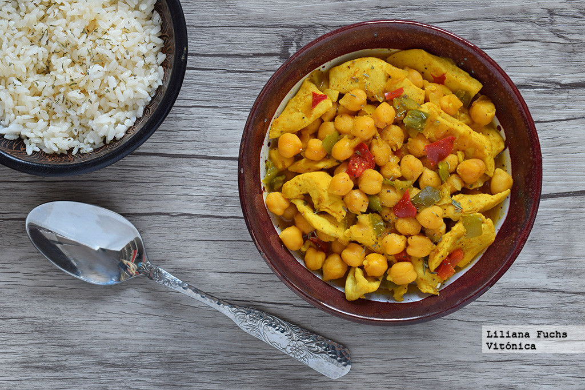

Garbanzos con Curry y Pollo
por Antxon Eguiguren
Ingredientes para 4 personas:
- 2 pechugas de pollo enteras
- 1 cabeza de Ajo
- 2 cebollas rojas
- 1 pimiento verde
- 1 pimiento rojo
- 500 gramos de champiñones laminados
- 1 bote de garbanzos cocidos
- 1 lata de leche de coco
- Una cucharada de jengibre, cúrcuma y curry en polvo
- 1 cayena
- Aceite de oliva, sal y pimienta negra
Proceso de preparación:
- Pon aceite a calentar a fuego lento en una olla grande y pon la cayena dentro.
- Pica el ajo en láminas y ponlo a freir a fuego lento para que se vaya dorando.
- Trocea las pechugas en dados y metelas en la olla hasta que se doren por fuera. Echa sal y pimienta negra.
- Saca el pollo y el ajo y retiralos en un plato. Además, encuentra la cayena y tirala a la basura.
- Pon más aceite en la olla y sofrie las cebollas, el pimiento verde y el pimiento rojo. Echa sal y pimienta al gusto.
- Una vez pochadas las verduras, incluye los champiñones.
- Añade los garbanzos y el pollo con el ajo.
- Abre la lata de leche de coco e inclúyela en la olla.
- Pon una cucharada de jengibre en polvo, cúrcuma y curry.
- Mezcla bien todo y voilá.
